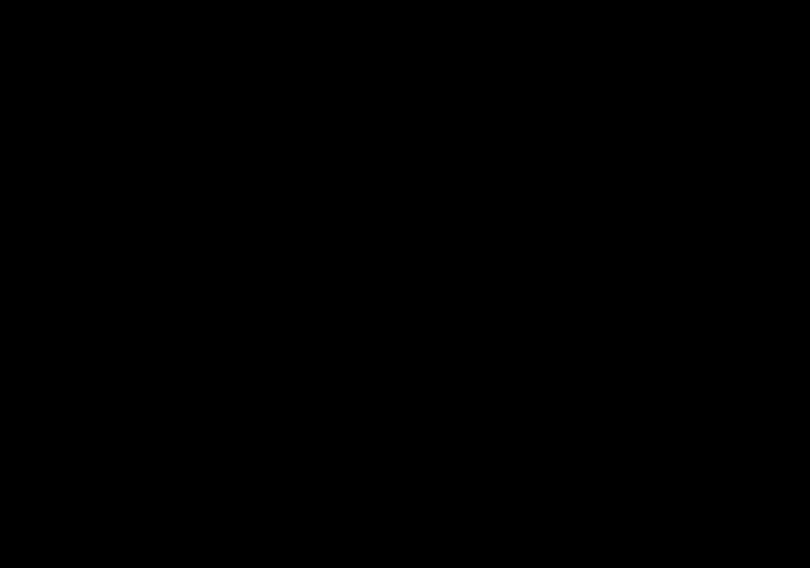
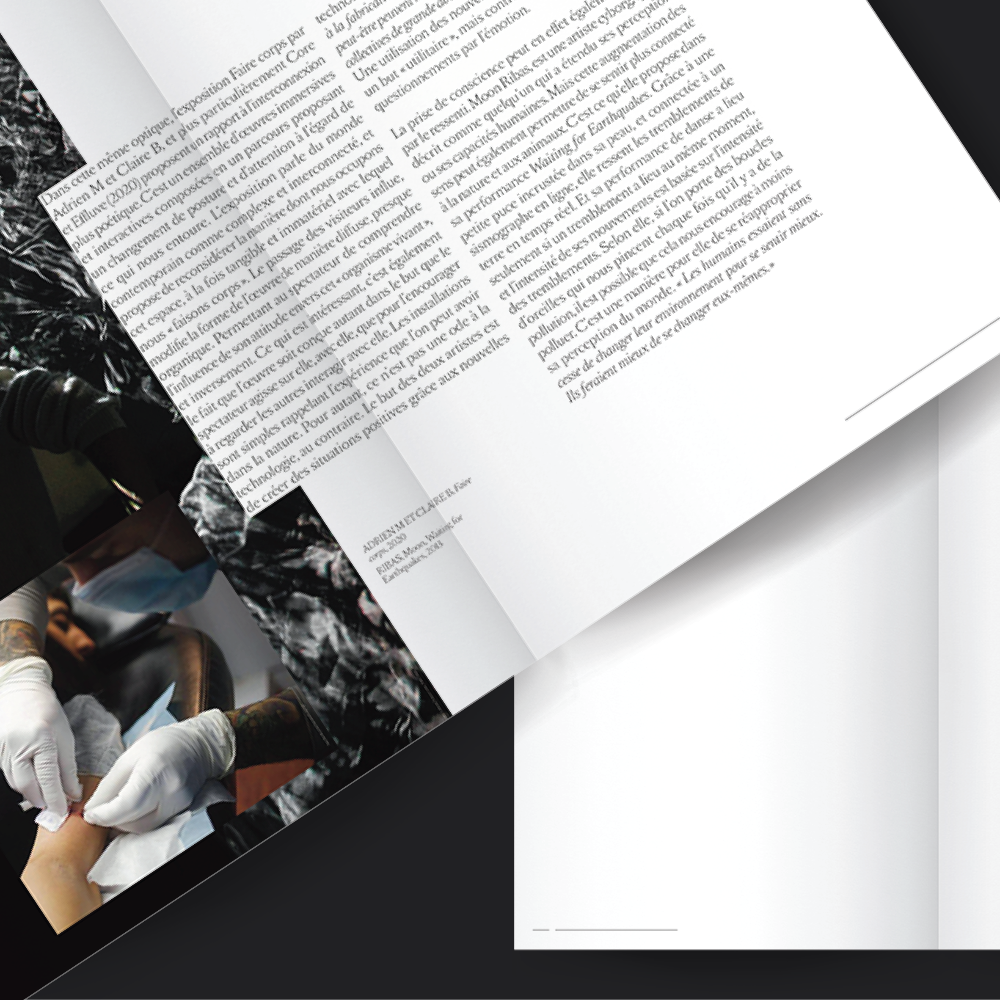
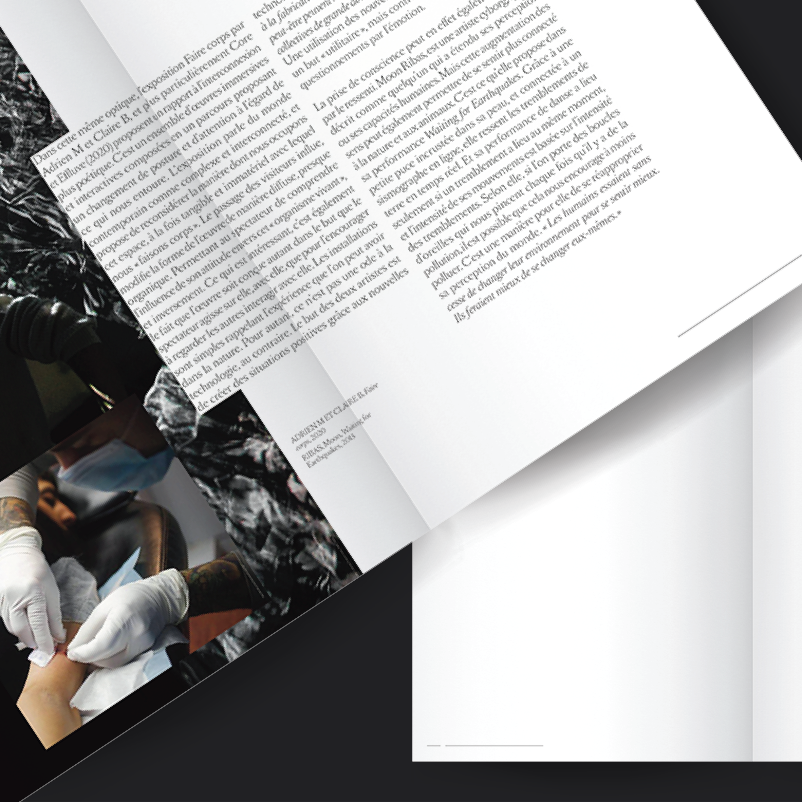
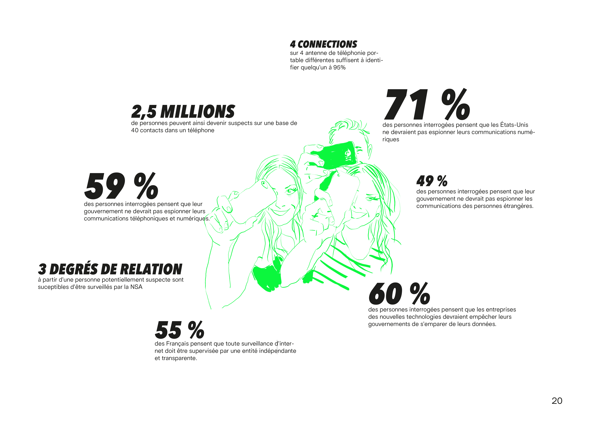
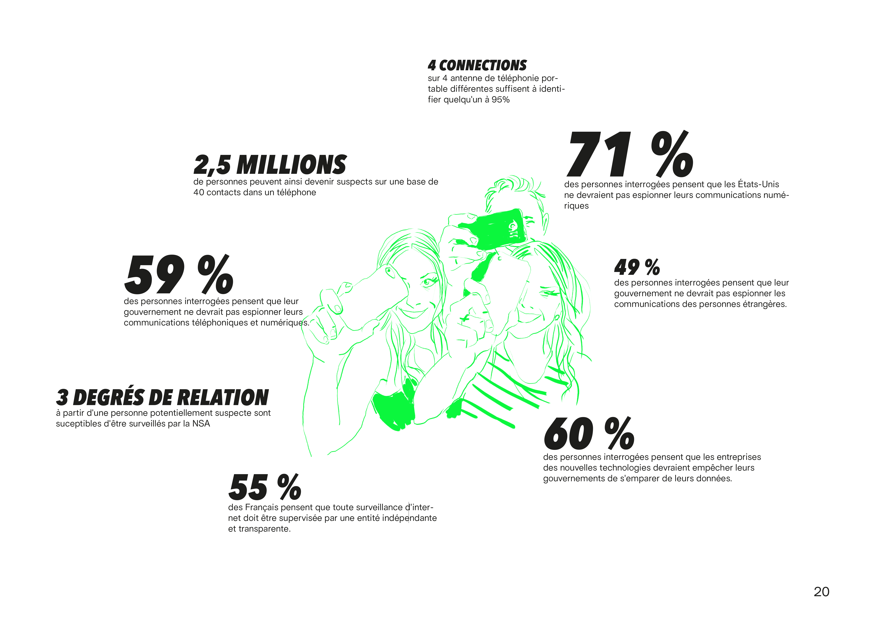
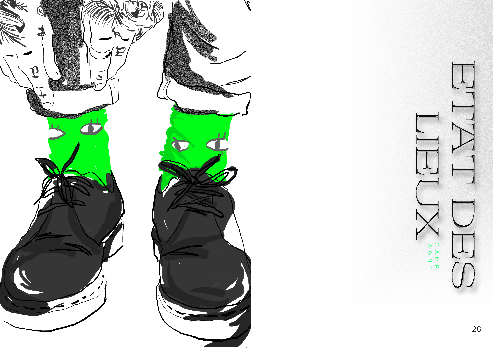
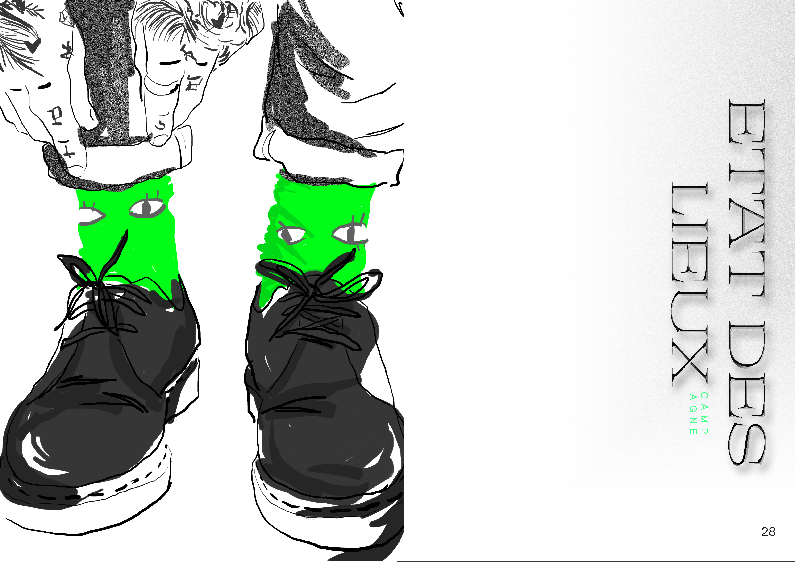

2018 — Entre deux
Video project, drone

2018 — Internship report
Graphic design, print, augmented reality
2020 — Heart rate sensor
Electronics, interactive installation

2018 — Empreintes
Augmented reality, scenography
2020 — Cærulean
Master degree Diploma Project


 



 
 
